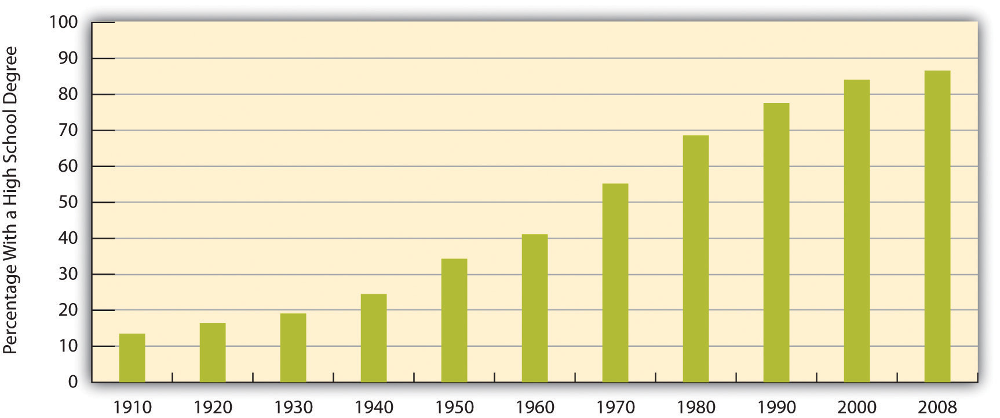
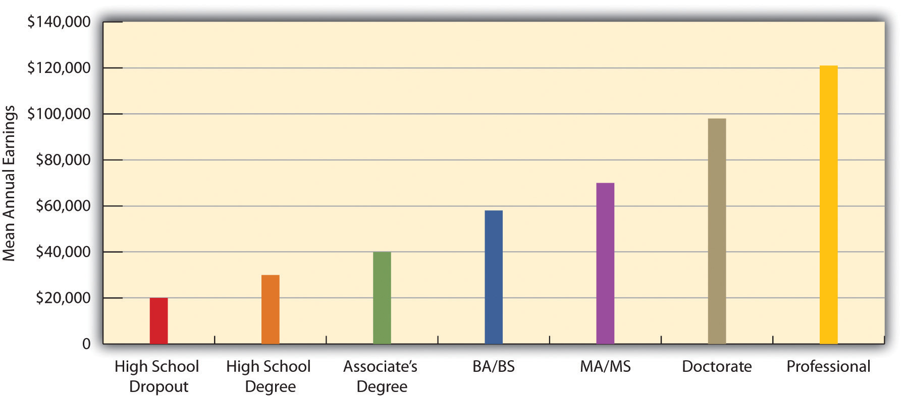

Education in the United States is a massive social institution involving millions of people and billions of dollars. About 75 million people, almost one-fourth of the U.S. population, attend school at all levels. This number includes 40 million in grades pre-K through 8, 16 million in high school, and 19 million in college (including graduate and professional school). They attend some 132,000 elementary and secondary schools and about 4,200 2-year and 4-year colleges and universities and are taught by about 4.8 million teachers and professors (U.S. Census Bureau, 2010).U.S. Census Bureau. (2010). Statistical abstract of the United States: 2010. Washington, DC: U.S. Government Printing Office. Retrieved from http://www.census.gov/compendia/statab Education is a huge social institution.
About 65% of U.S. high school graduates enroll in college the following fall. This is a very high figure by international standards, as college in many other industrial nations is reserved for the very small percentage of the population who pass rigorous entrance exams. They are the best of the brightest in their nations, whereas higher education in the United States is open to all who graduate high school. Even though that is true, our chances of achieving a college degree are greatly determined at birth, as social class and race/ethnicity have a significant effect on access to college. They affect whether students drop out of high school, in which case they do not go on to college; they affect the chances of getting good grades in school and good scores on college entrance exams; they affect whether a family can afford to send its children to college; and they affect the chances of staying in college and obtaining a degree versus dropping out. For these reasons, educational attainment depends heavily on family income and race and ethnicity.
Figure 16.2 "Race, Ethnicity, and High School Dropout Rate, 16–24-Year-Olds, 2007" shows how race and ethnicity affect dropping out of high school. The dropout rate is highest for Latinos and Native Americans and lowest for Asians and whites. One way of illustrating how income and race/ethnicity affect the chances of achieving a college degree is to examine the percentage of high school graduates who enroll in college immediately following graduation. As Figure 16.3 "Family Income and Percentage of High School Graduates Who Attend College Immediately After Graduation, 2007" shows, students from families in the highest income bracket are more likely than those in the lowest bracket to attend college. For race/ethnicity, it is useful to see the percentage of persons 25 or older who have at least a 4-year college degree. As Figure 16.4 "Race, Ethnicity, and Percentage of Persons 25 or Older With a 4-Year College Degree, 2008" shows, this percentage varies significantly, with African Americans and Latinos least likely to have a degree.
Figure 16.2 Race, Ethnicity, and High School Dropout Rate, 16–24-Year-Olds, 2007

Source: Data from Planty, M., Hussar, W., Snyder, T., Kena, G., KewalRamani, A., Kemp, J.,…Nachazel, T. (2009). The condition of education 2009 (NCES 2009-081). Washington, DC: National Center for Education Statistics, U.S. Department of Education.
Figure 16.3 Family Income and Percentage of High School Graduates Who Attend College Immediately After Graduation, 2007

Source: Data from Planty, M., Hussar, W., Snyder, T., Kena, G., KewalRamani, A., Kemp, J.,…Nachazel, T. (2009). The condition of education 2009 (NCES 2009-081). Washington, DC: National Center for Education Statistics, U.S. Department of Education.
Figure 16.4 Race, Ethnicity, and Percentage of Persons 25 or Older With a 4-Year College Degree, 2008

Source: Data from U.S. Census Bureau. (2010). Statistical abstract of the United States: 2010. Washington, DC: U.S. Government Printing Office. Retrieved from http://www.census.gov/compendia/statab.
Why do African Americans and Latinos have lower educational attainment? Two factors are commonly cited: (a) the underfunded and otherwise inadequate schools that children in both groups often attend and (b) the higher poverty of their families and lower education of their parents that often leave them ill-prepared for school even before they enter kindergarten (Ballantine & Hammack, 2009; Yeung & Pfeiffer, 2009).Ballantine, J. H., & Hammack, F. M. (2009). The sociology of education: A systematic analysis (6th ed.). Upper Saddle River, NJ: Prentice Hall; Yeung, W.-J. J., & Pfeiffer, K. M. (2009). The black-white test score gap and early home environment. Social Science Research, 38(2), 412–437.
Does gender affect educational attainment? The answer is yes, but perhaps not in the way you expect. If we do not take age into account, slightly more men than women have a college degree: 30.1% of men and 28.8% of women. This difference reflects the fact that women were less likely than men in earlier generations to go to college. But now there is a gender difference in the other direction: women now earn more than 57% of all bachelor’s degrees, up from just 35% in 1960 (see Figure 16.5 "Percentage of All Bachelor’s Degrees Received by Women, 1960–2007").
Figure 16.5 Percentage of All Bachelor’s Degrees Received by Women, 1960–2007

Source: Data from U.S. Census Bureau. (2010). Statistical abstract of the United States: 2010. Washington, DC: U.S. Government Printing Office. Retrieved from http://www.census.gov/compendia/statab.
Have you ever applied for a job that required a high school degree? Are you going to college in part because you realize you will need a college degree for a higher-paying job? As these questions imply, the United States is a credential societyA society in which higher education is seen as evidence of the attainment of the needed knowledge and skills for various kinds of jobs. (Collins, 1979).Collins, R. (1979). The credential society: An historical sociology of education and stratification. New York, NY: Academic Press. This means at least two things. First, a high school or college degree (or beyond) indicates that a person has acquired the needed knowledge and skills for various jobs. Second, a degree at some level is a requirement for most jobs. As you know full well, a college degree today is a virtual requirement for a decent-paying job. Over the years the ante has been upped considerably, as in earlier generations a high school degree, if even that, was all that was needed, if only because so few people graduated from high school to begin with (see Figure 16.6 "Percentage of Population 25 or Older With at Least a High School Degree, 1910–2008"). With so many people graduating from high school today, a high school degree is not worth as much. Then, too, today’s technological and knowledge-based postindustrial society increasingly requires skills and knowledge that only a college education brings.
Figure 16.6 Percentage of Population 25 or Older With at Least a High School Degree, 1910–2008
Source: Data from Snyder, T. D., Dillow, S. A., & Hoffman, C. M. (2009). Digest of education statistics 2008. Washington, DC: National Center for Education Statistics, U.S. Department of Education.
A credential society also means that people with more educational attainment achieve higher incomes. Annual earnings are indeed much higher for people with more education (see Figure 16.7 "Educational Attainment and Mean Annual Earnings, 2007"). As earlier chapters indicated, gender and race/ethnicity affect the payoff we get from our education, but education itself still makes a huge difference for our incomes.
Figure 16.7 Educational Attainment and Mean Annual Earnings, 2007
Source: Data from U.S. Census Bureau. (2010). Statistical abstract of the United States: 2010. Washington, DC: U.S. Government Printing Office. Retrieved from http://www.census.gov/compendia/statab.
Education also makes a difference for our attitudes. Researchers use different strategies to determine this effect. They compare adults with different levels of education; they compare college seniors with first-year college students; and sometimes they even study a group of students when they begin college and again when they are about to graduate. However they do so, they typically find that education leads us to be more tolerant and even approving of nontraditional beliefs and behaviors and less likely to hold various kinds of prejudices (McClelland & Linnander, 2006; Moore & Ovadia, 2006).McClelland, K., & Linnander, E. (2006). The role of contact and information in racial attitude change among white college students. Sociological Inquiry, 76(1), 81–115; Moore, L. M., & Ovadia, S. (2006). Accounting for spatial variation in tolerance: The effects of education and religion. Social Forces, 84(4), 2205–2222. Racial prejudice and sexism, two types of belief explored in previous chapters, all reduce with education. Education has these effects because the material we learn in classes and the experiences we undergo with greater schooling all teach us new things and challenge traditional ways of thinking and acting.
We see evidence of education’s effect in Figure 16.8 "Education and Agreement That “It Is Much Better for Everyone Involved If the Man Is the Achiever Outside the Home and the Woman Takes Care of the Home and Family”", which depicts the relationship in the General Social Survey between education and agreement with the statement that “it is much better for everyone involved if the man is the achiever outside the home and the woman takes care of the home and family.” College-educated respondents are much less likely than those without a high school degree to agree with this statement.
Figure 16.8 Education and Agreement That “It Is Much Better for Everyone Involved If the Man Is the Achiever Outside the Home and the Woman Takes Care of the Home and Family”

Source: Data from General Social Survey, 2008.